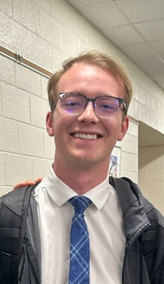

As of right now it is a one man show, my name is Braden! I've been a Seahawks fan since I was 10 that season was Russell Wilson's first year where our season ended in the divisional round to the Atlanta Falcons. My father was born and raised in Seattle, he grew up going to SuperSonics games and watching the Hawks on TV. Once I came of age he passed that fandom onto me, and even though I lived in the Seattle area for a very brief time I am a Seattle sports fan. I have seen the ups and downs of the last 10 years of the Hawks including Super Bowls and missing the playoffs. Although I have not been around for the early days, I am engrossed in the history of the NFL. I am fascinated in learning about the old generation. Legends like Steve Largent and Shaun Alexander hold a special place in my heart. I believe that I have opinions that others will relate with and I love talking Seahawks football with many different people.
